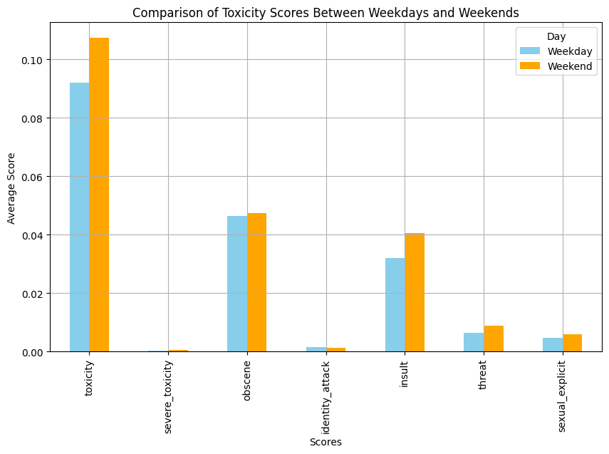
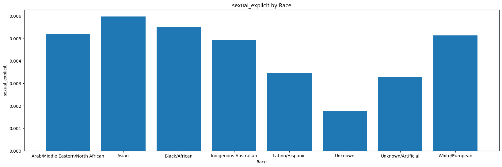

In this research, we examine how temporal context (day/night) and agent selection influence player emotions and behavior in the game *Valorant*. Using Reddit data, we analyze posts discussing agents, focusing on sentiment and toxicity levels over time, as well as any shifts after key game updates.

The research investigates the impact of various game updates (e.g., Gekko Patch Notes 9.08) and explores correlations between toxicity and the race of the agents mentioned.
The study utilizes Detoxify to analyze toxicity scores across seven categories, including toxicity, severe toxicity, obscenity, threats, insults, identity hatred, and sexual explicit content.

Research Questions:
How does the time of day affect the sentiment in discussions about the same agent in Valorant?
What is the correlation between toxicity and the race of agents mentioned in Valorant discussions?
How did the Gekko patch impact players' sentiment, and did it influence the other agents in the initiator role?
The analysis revealed several important insights. First, there was no significant correlation between the time of day (day/night) and the sentiment or toxicity levels in *Valorant* discussions. This indicates that the sentiment expressed in discussions does not seem to be influenced by when the post was made.
Second, we found a statistically significant difference in toxicity levels based on the race of the agent being discussed. In particular, agents of certain racial backgrounds, particularly Asian agents, attracted higher toxicity scores compared to others. This suggests that racial bias may play a role in the toxicity observed in the *Valorant* community.
Finally, the introduction of the Gekko agent in Patch Notes 9.08 had a noticeable impact on player sentiment. Following the update, players’ discussions focused more on the gameplay aspects and specific abilities of Gekko. This shift in conversation was also reflected in the decreased frequency of discussions about other agents in the initiator role, such as Skye and Sova.
Before the Gekko patch, conversations generally centered on agent performance, team strategies, and gameplay mechanics. After the patch, however, the focus shifted to Gekko-specific abilities and how to use them effectively in matches. This change highlights the significance of new content in shaping the dynamics of online discussions.
Additional Insights:
The findings also revealed that discussions about agent performance were initially negative but became more stable over time. Notably, the shift towards Gekko’s abilities following the patch was an important marker in changing the conversation dynamics.
naisyuanchang@gmail.com
858-933-8169